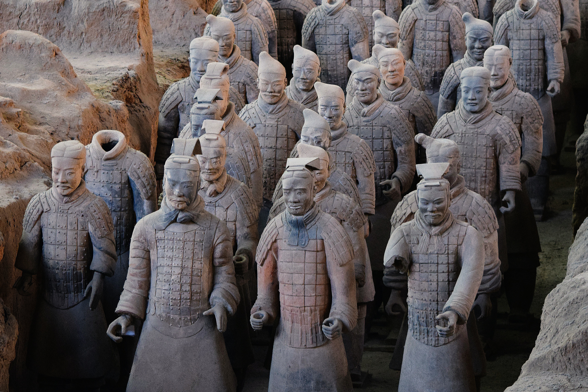

인간은 역사적으로 토테미즘이나 자연을 신격화하는 행위들을 해왔음
이는 인간의 자발적 행위로 필멸자의 특유한 불안감으로부터 비롯됐을 확률이 높음
물론 혹자는 지도자층에서 지배하기 위해 신이라는 추상체를 만든 것이라 반박할 수도 있음
여기서는 진시황제의 불멸초 찾기 사건을 들어야 하는데,
지도자가 진시황제와 같이 독보적인 입지를 가졌다 하더라도
죽음이라는 인과 앞에서는 무력감을 드러낸다는 사실을 알 수 있음

진시황이 얼마나 명(名)과 권세를 남기고 싶었는지 알 수 있음